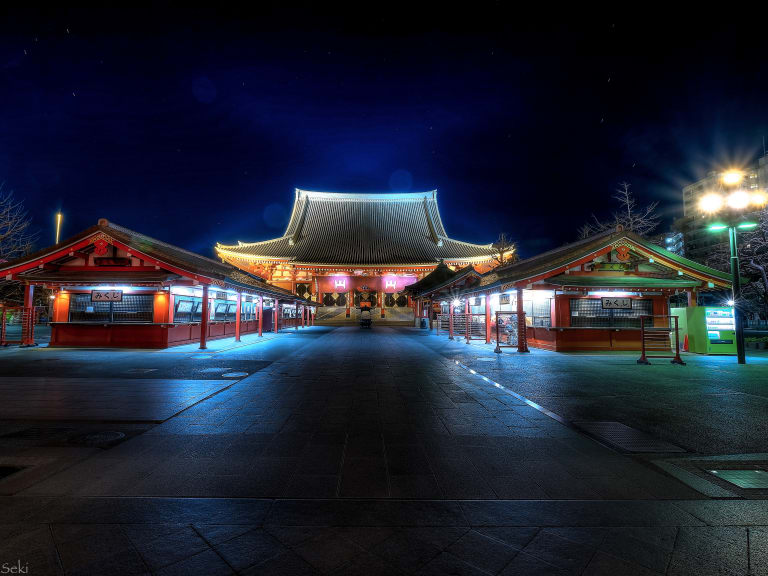
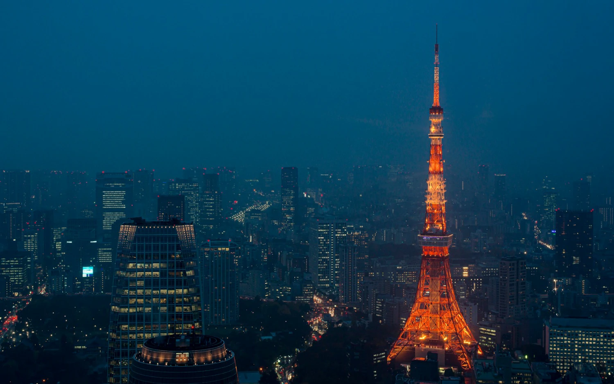
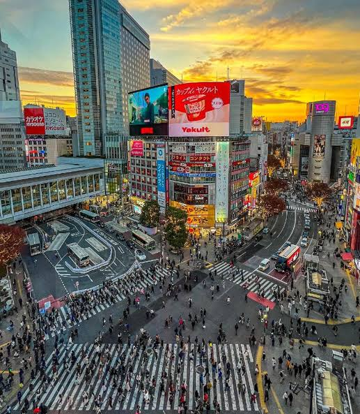
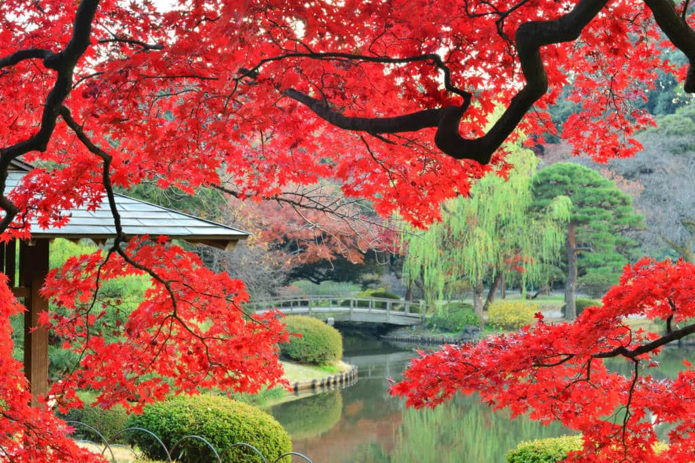
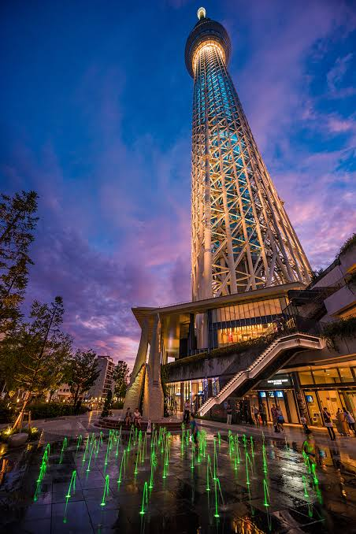
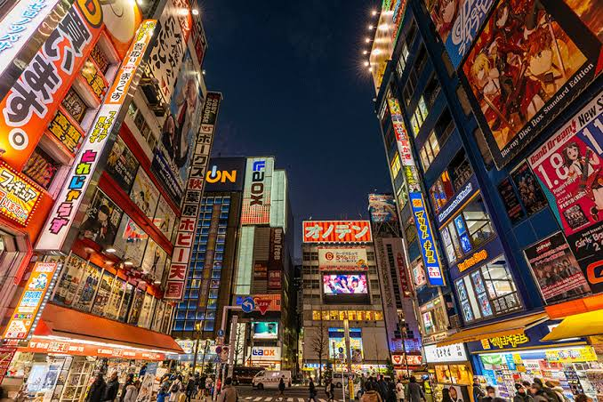
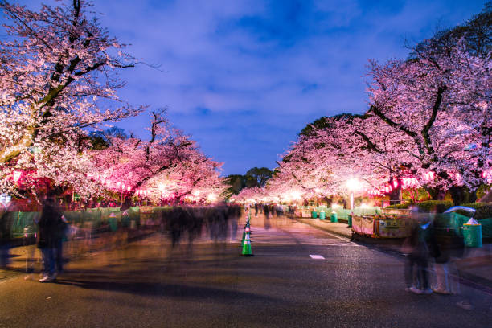
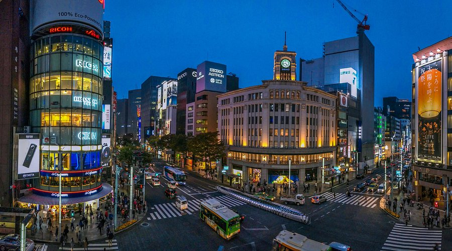

A Metrópole do Futuro
Multimédia
Nesta página encontra conteúdos multimédia sobre Tóquio.
Fotografias | Vídeo | Poema
Galeria de Fotografias








Vídeo de Tóquio
Poesia
Luzes de neon na noite escura,
Tóquio desperta em flor de cerejeira,
Entre o betão e a tradição pura,
A cidade brilha à sua maneira.